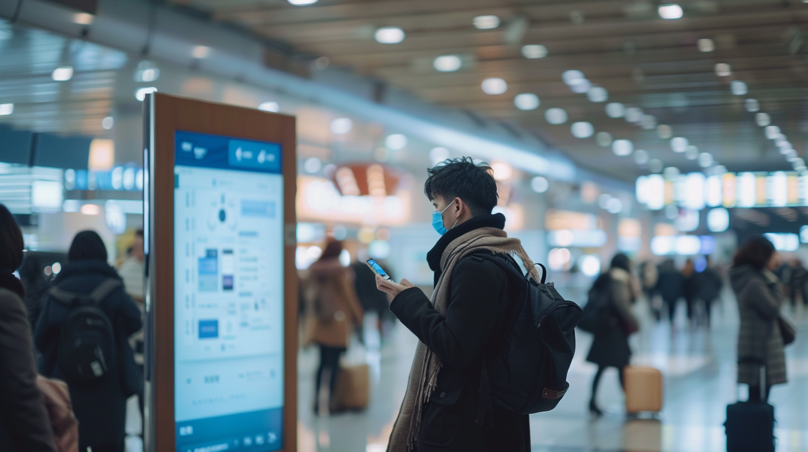

Discover how AI and chatbots improve travel with personalized, efficient pre-travel activities like online check-ins and tailored reminders.
In today’s fast-paced air travel environment, AI chatbot technology and chatbot check-in reminders are transforming the way passengers interact with airlines. These innovations streamline the check-in process and boarding procedures, making travel more efficient and enjoyable. With brands like TravelAI leading the charge, airlines are using travel chatbot AI to enhance the customer experience from start to finish.
By using check-in alerts and check-in bots, airlines ensure that passengers stay informed and on time, improving the overall journey. The integration of chatbots has revolutionized how passengers receive critical flight updates and reminders, all with the simplicity of automation.
The rise of AI chatbot technology in the aviation industry marks a significant leap in digital solutions. What began as basic automated systems has evolved into advanced AI agents capable of handling complex tasks like chatbot check-in reminders and real-time travel assistance. Brands like TravelAI are at the forefront of transforming passenger journeys.
In the early 2000s, airlines introduced basic chatbots for common customer queries, easing the workload on service agents. As AI in the travel industry advanced, so did these airport chatbots, which now manage inquiries like flight status and baggage information.
Modern travel chatbot AI systems, such as TravelAI, use machine learning to handle complex tasks like personalized recommendations, multi-leg itineraries, and real-time rebooking. With integration across websites, apps, and social media, passengers receive chatbot check-in reminders and instant support.
The adoption of travel and hospitality chatbots is part of a broader digital transformation. AI chatbots automate routine tasks, cutting costs and allowing airlines to focus on more complex issues.
Customer expectations for quick, automatic responses drive the demand for AI chatbot systems. With check-in alerts and check-in bots, travelers expect the same convenience seen in other industries. AI systems provide 24/7 support, ensuring seamless service and updates.
In a competitive market, airlines that implement AI agents see better customer satisfaction and operational efficiency. By analyzing data, AI chatbots create personalized experiences and send chatbot check-in reminders, making these digital services more critical post-pandemic.

The check-in process has long frustrated travelers with long lines and delays. Now, AI-powered solutions are transforming this experience, making it faster and more convenient. Tools like TravelAI offer smoother, more personalized check-ins for both passengers and airlines.
AI chatbots are integral to the check-in bot process, providing real-time, proactive support. They send chatbot check-in reminders to alert passengers when check-in opens, usually 24 to 48 hours before the flight. This reduces the risk of missing the check-in window and avoids last-minute stress.
AI chatbots also monitor flight statuses and send check-in alerts for changes like delays or gate reassignments. They analyze weather data to notify travelers of disruptions, offering preparation tips. For international flights, these airport chatbots guide passengers through document verification, making the process faster and easier.
With TravelAI, passengers can check-in, select seats, and pay for upgrades—all through the chatbot interface, simplifying the entire process.
AI-powered check-ins offer more than just convenience. AI agents streamline the process, cutting down wait times and giving passengers the flexibility to check in from anywhere, anytime. This is especially useful for business travelers or those with tight schedules.
Personalization is another key benefit. Chatbot check-in reminders analyze travel history and preferences to recommend seats, meal options, or upgrades, ensuring a tailored experience that makes passengers feel valued.
Additionally, AI chatbots provide instant answers to common check-in queries, such as baggage allowances or carry-on restrictions, empowering travelers with immediate, accurate information without waiting for human assistance.
Boarding is often stressful, with crowded gates and last-minute changes. AI chatbot technology, like TravelAI, is revolutionizing the boarding process, making it more organized for both passengers and airlines.
AI-powered chatbots provide real-time communication during boarding. These airport chatbots send chatbot check-in reminders directly to passengers’ smartphones, updating them on gate numbers and boarding times. This proactive approach minimizes missed boardings and eliminates last-minute rushing.
If a gate change occurs, AI chatbots instantly notify passengers with new gate details, walking directions, and estimated travel time. By delivering real-time information, travel and hospitality chatbots help passengers navigate airports with confidence, reducing stress and potential delays.
Chatbots also answer common boarding questions, such as carry-on luggage sizes or boarding group assignments. This instant support improves passenger experience and reduces the workload on gate agents, allowing them to focus on higher-priority tasks.
Some airlines are testing AI agents that predict boarding issues before they happen. By tracking passenger locations, these systems send personalized check-in alerts or assistance to passengers at risk of missing their flight, helping prevent delayed departures.
The integration of AI chatbots significantly enhances both passenger experience and airline efficiency. For travelers, real-time updates reduce confusion, resulting in a less stressful boarding process and improved satisfaction.
For airlines, AI-assisted boarding ensures smoother, faster processes, with passengers arriving on time and better prepared. This leads to fewer delays and reduced operational costs. By automating routine tasks, chatbots allow staff to address complex issues more effectively. The data gathered from these AI interactions also helps airlines refine and improve boarding procedures.
Personalization is critical in today’s customer experience, and AI chatbots are driving this transformation in air travel. Tools like TravelAI leverage data to offer chatbot check-in reminders and create customized experiences, enhancing convenience and satisfaction.
AI systems analyze traveler preferences, history, and behavior to provide personalized recommendations. AI chatbots go beyond addressing passengers by name, delivering relevant information based on travel patterns.
For example, frequent business travelers may receive check-in alerts about connecting flights and optimal airport routes. For leisure travelers, an AI chatbot could suggest weather updates or insurance options for water activities. This ensures the experience is tailored to individual needs.
Travel chatbot AI systems can also recommend local transportation or cultural tips, anticipating questions before they arise. These airport chatbots improve the overall travel experience by offering proactive support.
Additionally, AI agents adapt communication styles based on past interactions, offering either step-by-step instructions or quicker responses depending on passenger preferences, which enhances interaction quality and makes travelers feel understood.
Personalized services from travel and hospitality chatbots significantly impact customer satisfaction. Airlines that cater to individual needs, such as addressing a passenger’s fear of flying or suggesting suitable meal options via a check-in bot, increase customer loyalty.
From a brand perspective, AI-powered personalization sets airlines apart in a competitive industry. TravelAI helps airlines create tailored experiences, attracting and retaining customers, especially when price differences are minimal.
Furthermore, data collected by AI chatbots provides valuable insights into passenger preferences. Airlines can use this information to adjust services, improve offerings, and make strategic decisions about routes and schedules.
While AI chatbot technology offers significant benefits, airlines face challenges around privacy, security, and constant adaptation. Addressing these issues is critical to fully harnessing the power of chatbot check-in reminders and personalized AI services.
As AI chatbots collect personal data to offer services like check-in alerts, privacy concerns naturally arise. Passengers may wonder how their data is used, who can access it, and whether it’s shared. To maintain trust, airlines must adhere to strict data protection regulations.
Robust data protection measures are crucial. Airlines must use advanced encryption during transmission and storage, enforce strict access controls, and regularly audit their systems for vulnerabilities. Transparency is key—airlines should clearly explain what data is collected, how it’s used, and for how long. Providing customers with easy-to-understand privacy policies and data preferences builds trust in the travel chatbot AI experience.
Compliance with regulations such as GDPR in Europe and CCPA in the U.S. is essential. These laws often require explicit user consent for data collection, giving passengers the right to access, correct, or delete their personal information. By adhering to these standards, airlines ensure that passengers can enjoy chatbot check-in reminders while feeling secure about their data privacy.
The rapid evolution of AI in the travel industry presents another challenge. To stay competitive, airlines must continually improve their AI-powered systems. This requires ongoing investment in AI agents and machine learning technologies to meet rising customer expectations.
AI systems like TravelAI should include feedback mechanisms to learn from past interactions and improve responses. Adaptability is also key, as AI chatbots must quickly adjust to new travel requirements and regulations, offering passengers up-to-date check-in alerts and travel advice.
The potential for AI chatbots in air travel is limitless, with emerging technologies set to revolutionize the pre-travel experience. Tools like TravelAI will make the future of travel more personalized, smoother, and more enjoyable for travelers.
One of the key advancements in AI chatbot technology is natural language processing. This will allow travel chatbot AI systems to understand complex queries with greater accuracy, creating more human-like interactions. Passengers will have natural conversations with virtual assistants, receiving tailored suggestions as if speaking to a human agent.
Another innovation is the integration of predictive analytics. By analyzing flight data, weather, and social media trends, AI chatbots will predict potential disruptions and recommend the best travel times. For instance, a travel chatbot AI could suggest booking a flight earlier to avoid forecasted bad weather, helping travelers avoid delays.
Personalized itinerary planning will also improve, with future AI chatbots considering travel history, preferences, and budget. These systems will recommend activities, restaurants, and experiences tailored to each traveler’s style.
Additionally, the integration of virtual and augmented reality (VR/AR) with AI chatbots will allow passengers to take virtual tours of airplane cabins or visualize how their luggage fits in overhead bins, reducing pre-travel stress.
These AI innovations will transform the pre-travel experience from a stressful task into an enjoyable part of the journey. Chatbot check-in reminders will handle routine tasks, offer real-time updates, and reduce anxiety.
As AI travel chatbots become more sophisticated, they will create highly personalized, seamless experiences tailored to each traveler’s preferences. With improved efficiency and access to better data, AI chatbots will empower travelers to make informed decisions, from booking flights to predicting the best times to travel.
AI chatbots and advanced technologies are transforming air travel, bringing new levels of efficiency, convenience, and personalization to every journey. From chatbot check-in reminders to real-time boarding updates, AI in the travel industry is reshaping how passengers interact with airlines.
AI-powered systems are revolutionizing check-ins, making the process faster and more intuitive. Chatbot check-in reminders provide timely updates, allowing travelers to manage upgrades and navigate the check-in process through AI chatbots. Boarding has improved as well, with real-time notifications and personalized guidance from AI agents ensuring a seamless journey.
AI in the travel industry has brought significant personalization. However, privacy and data security remain important. Airlines must implement strong protection measures and maintain transparency regarding how customer data is used.
Looking ahead, innovations such as natural language processing, predictive analytics, and virtual reality will further transform the pre-travel experience, making it even more seamless and enjoyable for passengers.